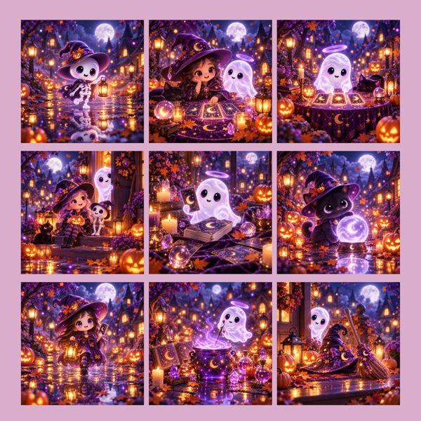
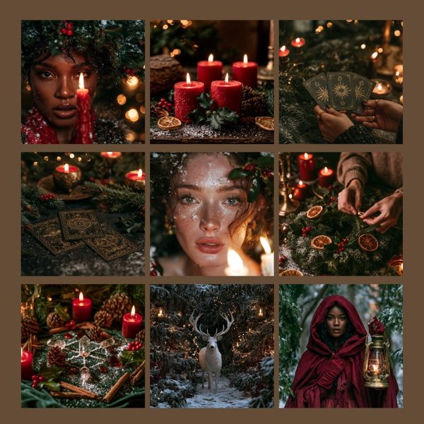
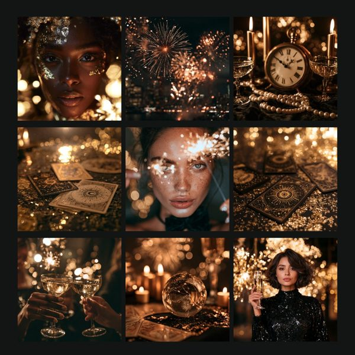
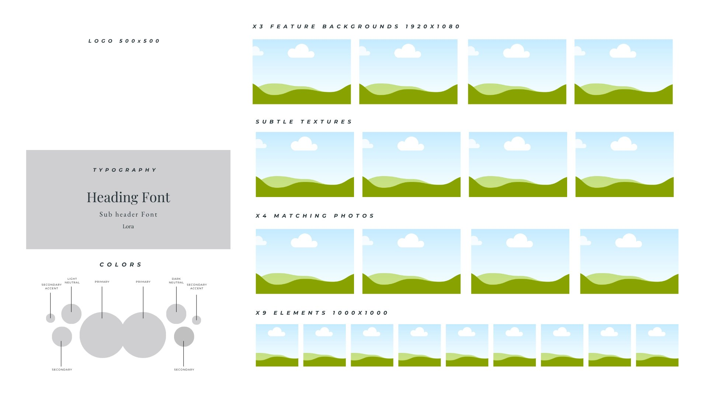

<title>Content Kit Forge</title>
<meta name="robots" content="noindex, nofollow">
<link rel="preconnect" href="https://fonts.googleapis.com">
<link rel="preconnect" href="https://fonts.gstatic.com" crossorigin>
<link href="https://fonts.googleapis.com/css2?family=Cormorant+Garamond:ital,wght@0,500;0,600;1,500&family=Hanken+Grotesk:wght@400;500;600;700&family=JetBrains+Mono:wght@500;600&display=swap" rel="stylesheet">
<style>
  /* Layout: one forge-lit column. The training first, then the three kits as a row of cards, then the brand board builder, one step at a time with a progress strip. Single dark look: Forge at Night. */
  :root{
    --bg:#0d1411;          /* forge-night green-black */
    --bg-2:#080c0a;
    --surface:#17130f;     /* soot */
    --ink:#f5efe8;
    --ink-dim:#a8998c;
    --ember:#ff6b1a;
    --cinder:#ffa24d;
    --copper:#c6955c;
    --gold:#d8b968;
    --green:#6fb58a;
    --edge:rgba(198,149,92,0.24);
    --serif:'Cormorant Garamond',Georgia,'Times New Roman',serif;
    --sans:'Hanken Grotesk',system-ui,-apple-system,'Segoe UI',sans-serif;
    --mono:'JetBrains Mono',ui-monospace,Menlo,Consolas,monospace;
    color-scheme:dark;
  }
  *{box-sizing:border-box}
  body{margin:0;background:var(--bg);color:var(--ink);font-family:var(--sans);font-size:16px;line-height:1.6;
    background-image:radial-gradient(900px 520px at 12% -8%,rgba(255,107,26,0.10),transparent 60%),
                     radial-gradient(700px 520px at 100% 10%,rgba(44,95,90,0.14),transparent 60%)}
  .wrap{max-width:880px;margin:0 auto;padding-inline:20px;padding-block:48px 72px;display:grid;gap:56px}
  .eyebrow{font-family:var(--mono);font-size:11px;letter-spacing:.24em;text-transform:uppercase;color:var(--ember);font-weight:600}
  h1{font-family:var(--serif);font-weight:600;font-size:clamp(42px,8vw,68px);line-height:1;margin:10px 0 0;letter-spacing:.3px;text-wrap:balance;
    background:linear-gradient(92deg,#e2b884,var(--cinder) 45%,var(--gold) 80%);-webkit-background-clip:text;background-clip:text;color:transparent}
  h2{font-family:var(--serif);font-weight:600;font-size:34px;line-height:1.1;margin:0;text-wrap:balance}
  h3{font-family:var(--serif);font-weight:600;font-size:25px;line-height:1.15;margin:0;text-wrap:balance}
  p{margin:0;max-width:64ch}
  .lede{font-size:18px;margin-top:16px}
  .section{display:grid;gap:18px}
  .dim{color:var(--ink-dim)}
  a{color:var(--gold)}
  a:focus-visible,button:focus-visible,input:focus-visible,textarea:focus-visible{outline:2px solid var(--cinder);outline-offset:3px}

  /* training */
  .video{position:relative;aspect-ratio:16/9;max-width:100%;border-radius:10px;overflow:hidden;border:1px solid var(--edge);background:var(--surface)}
  .video iframe{position:absolute;inset:0;width:100%;height:100%;border:0}
  .video .soon{position:absolute;inset:0;display:grid;place-items:center;text-align:center;padding:24px;
    background:radial-gradient(420px 260px at 50% 55%,rgba(255,107,26,.16),transparent 70%),var(--surface)}
  .video .soon b{display:block;font-family:var(--serif);font-size:28px;font-weight:600}

  /* kits */
  .kits{display:grid;grid-template-columns:repeat(3,1fr);gap:16px}
  .kit{display:grid;gap:12px;text-decoration:none;color:var(--ink);background:var(--surface);border:1px solid var(--edge);border-radius:10px;padding:12px 12px 16px;min-width:0;transition:border-color .2s}
  .kit:hover{border-color:var(--copper)}
  .kit img{width:100%;height:auto;border-radius:6px;display:block}
  .kit .name{font-family:var(--serif);font-size:21px;font-weight:600;line-height:1.15}
  .kit .go{font-family:var(--mono);font-size:11px;letter-spacing:.12em;text-transform:uppercase;color:var(--cinder)}
  @media (max-width:640px){.kits{grid-template-columns:1fr}}

  /* builder */
  .example{display:grid;gap:10px}
  .example img{width:100%;height:auto;border-radius:8px;border:1px solid var(--edge);display:block}
  .example figcaption{font-size:14px;color:var(--ink-dim)}
  .strip{display:grid;grid-template-columns:repeat(8,1fr);gap:6px}
  .strip button{all:unset;cursor:pointer;display:grid;gap:6px;min-width:0}
  .strip .bar{height:4px;border-radius:4px;background:#2a211a}
  .strip .lbl{font-family:var(--mono);font-size:10px;letter-spacing:.06em;text-transform:uppercase;color:var(--ink-dim);white-space:nowrap;overflow:hidden;text-overflow:ellipsis}
  .strip button.done .bar{background:linear-gradient(90deg,var(--ember),var(--gold))}
  .strip button.now .bar{background:var(--cinder)}
  .strip button.now .lbl{color:var(--ink)}
  .strip button[disabled]{cursor:default;opacity:.55}
  @media (max-width:640px){.strip .lbl{display:none}}
  .step{background:var(--surface);border:1px solid var(--edge);border-radius:12px;padding:24px;display:grid;gap:16px;min-width:0}
  .step .count{font-family:var(--mono);font-size:11px;letter-spacing:.18em;text-transform:uppercase;color:var(--gold)}
  .get{font-size:15px;color:var(--ink-dim)}
  .fields{display:grid;grid-template-columns:1fr 1fr;gap:14px}
  .field{display:grid;gap:6px;min-width:0}
  .field.wide{grid-column:1/-1}
  .field label{font-weight:600;font-size:15px}
  .field small{color:var(--ink-dim);font-size:13px}
  input,textarea{font:inherit;color:var(--ink);background:var(--bg-2);border:1px solid rgba(198,149,92,.35);border-radius:8px;padding:11px 12px;width:100%}
  textarea{min-height:76px;resize:vertical}
  @media (max-width:640px){.fields{grid-template-columns:1fr}}
  .how{font-size:15px;color:var(--ink-dim)}
  .how b{color:var(--ink)}
  .box{position:relative;background:var(--bg-2);border:1px solid rgba(198,149,92,.32);border-radius:8px;padding:16px 16px 54px;white-space:pre-wrap;overflow-wrap:anywhere;font-size:15.5px;line-height:1.55}
  .box .fill{color:var(--gold);font-weight:600}
  .box .empty{color:var(--cinder);font-weight:600}
  .copy{position:absolute;right:10px;bottom:10px;font-family:var(--mono);font-size:12px;letter-spacing:.06em;padding:7px 13px;border-radius:999px;background:transparent;color:var(--gold);border:1px solid var(--edge);cursor:pointer}
  .copy:hover{background:rgba(216,185,104,.12)}
  .tip{font-size:15px}
  .nav{display:flex;flex-wrap:wrap;gap:12px;align-items:center;justify-content:space-between}
  .btn{font:inherit;font-weight:600;font-size:15.5px;padding:13px 22px;border-radius:999px;border:0;cursor:pointer;background:linear-gradient(135deg,var(--ember),var(--gold));color:var(--bg-2)}
  .ghost{font:inherit;font-size:15px;background:transparent;color:var(--ink-dim);border:0;cursor:pointer;padding:8px 0}
  .ghost:hover{color:var(--ink)}
  .finished{display:grid;gap:12px;text-align:left}
  footer{font-size:13px;color:var(--ink-dim)}
  @media (max-width:520px){.wrap{padding-block:32px 56px;gap:44px}.step{padding:18px}h2{font-size:29px}}
  @media (prefers-reduced-motion:reduce){*{transition:none!important}}
</style>

<main class="wrap">

  <header>
    <div class="eyebrow">Soul-Forged Founders · your trial bonus</div>
    <h1>Content Kit Forge</h1>
    <p class="lede">Three more content kits, the training on making your own, and a brand board you build image by image.</p>
  </header>

  <section class="section" aria-labelledby="train-h">
    <div class="eyebrow">The training</div>
    <h2 id="train-h">Forge Your Own Content Kit</h2>
    <p>Pick a theme, choose nine scenes, make the images in ChatGPT and turn them into a kit your brand can post from all season.</p>
    <div class="video" id="video">
      <div class="soon"><div><b>The training video goes here</b><span class="dim">Sunny is recording it now.</span></div></div>
    </div>
  </section>

  <section class="section" aria-labelledby="kits-h">
    <div class="eyebrow">Your three kits</div>
    <h2 id="kits-h">Nine images and four prompts in each</h2>
    <p>Open a kit, download the nine images, and run Prompt 1 to put the whole set in your brand colors.</p>
    <div class="kits">
      <a class="kit" href="../halloween-content-kit-ii/" target="_blank" rel="noopener">
        
        <span class="name">Halloween Content Kit II</span><span class="go">Open the kit →</span>
      </a>
      <a class="kit" href="../winter-solstice-content-kit/" target="_blank" rel="noopener">
        
        <span class="name">The Winter Solstice Content Kit</span><span class="go">Open the kit →</span>
      </a>
      <a class="kit" href="../new-years-eve-content-kit/" target="_blank" rel="noopener">
        
        <span class="name">The New Year's Eve Content Kit</span><span class="go">Open the kit →</span>
      </a>
    </div>
  </section>

  <section class="section" aria-labelledby="board-h">
    <div class="eyebrow">Build your brand board</div>
    <h2 id="board-h">Your brand, image by image</h2>
    <p>Seven prompts, all in one ChatGPT chat. Each prompt hands its images to the next, so by the end you have a logo, colors, fonts, backgrounds, textures, photos and elements that all belong together, laid out on one board, in ChatGPT or in my Canva template.</p>
    <figure class="example" style="margin:0">
      
      <figcaption>The brand board template you'll fill. Each step below makes one part of it.</figcaption>
    </figure>

    <div class="strip" id="strip" role="list"></div>
    <div id="stage"></div>
  </section>

  <footer>✦ Sunny Sink · Soul-Forged Founders · Build Studio is live every Friday at 1:00pm PT. Bring your board.</footer>
</main>

<script>
  /* The training video: put the YouTube id here once it's uploaded. */
  var VIDEO_ID = '';
  /* Sunny's brand board template: put its share link here. */
  var TEMPLATE_URL = 'https://canva.link/cepb1n6dhhw0h33';
  if (VIDEO_ID) {
    document.getElementById('video').innerHTML = '<iframe src="https://www.youtube-nocookie.com/embed/' + VIDEO_ID + '" title="Forge Your Own Content Kit" allow="accelerometer; encrypted-media; gyroscope; picture-in-picture; fullscreen" allowfullscreen></iframe>';
  }

  var KEY = 'content-kit-forge-board';
  var state = {step:0, done:{}, f:{}};
  try { var s = JSON.parse(localStorage.getItem(KEY)); if (s) state = Object.assign(state, s); } catch(e){}
  function save(){ try { localStorage.setItem(KEY, JSON.stringify(state)); } catch(e){} }

  var FIELDS = [
    {id:'name', label:'Your business name', hint:'Exactly as it should be spelled on your logo', ph:'Moonlit Path Tarot'},
    {id:'what', label:'What you do', hint:'In a few words', ph:'tarot readings and intuitive coaching'},
    {id:'who', label:'Who you serve', hint:'The people your brand speaks to', ph:'women coming back to their intuition after burnout'},
    {id:'vibe', label:'Three words for the feel', hint:'How your brand should feel at first glance', ph:'moody, romantic, candlelit'},
    {id:'symbols', label:'Symbols and objects from your work', hint:'The things that belong in your world', ph:'tarot cards, roses, a crescent moon, an antique key', wide:true},
    {id:'scene', label:'A scene from your world', hint:'Someone, somewhere, doing something', ph:'a woman reading tarot by candlelight in a velvet room', wide:true},
    {id:'colors', label:'Colors you already use', hint:'Optional. Leave blank and ChatGPT picks a palette from your words', ph:'plum, antique gold, soft rose', wide:true}
  ];

  function F(id){ var v = (state.f[id]||'').trim(); return v ? '<span class="fill">'+esc(v)+'</span>' : '<span class="empty">['+FIELDS.filter(function(x){return x.id===id})[0].label.toLowerCase()+']</span>'; }
  function esc(t){ return t.replace(/[&<>"]/g,function(c){return {'&':'&amp;','<':'&lt;','>':'&gt;','"':'&quot;'}[c]}); }

  var STEPS = [
    {short:'Your brand', title:'Start with your brand', get:'Fill these in once. Every prompt after this uses your words, so you copy and paste with nothing to edit.', fields:true},
    {short:'Colors', title:'Colors and fonts', get:'You get eight colors with hex codes, three Google Fonts, and an image of your palette to attach to every prompt after this one.',
     how:'Open a new chat in <b>ChatGPT Work</b> and paste this. Do every step after this <b>in this same chat</b>, so ChatGPT has all your pieces when you build the board at the end.',
     prompt:function(){ return 'Create a brand palette and font pairing for '+F('name')+', '+F('what')+' for '+F('who')+'. The brand should feel '+F('vibe')+'.'+((state.f.colors||'').trim()?' Start from these colors: '+F('colors')+'.':'')+'\n\nGive me eight colors with hex codes in these roles: two primary, two secondary, one light neutral, one dark neutral and two small accents. Then give me three Google Fonts: one for headings, one for subheadings and labels, one for body text. For each color and each font, add one line on where it goes on my posts and pages.\n\nThen create one image: the eight colors as circles in different sizes, each labeled with its role, on a plain white background.'; },
     tip:'Save the palette image. It goes in with every prompt from here on, so your whole board stays in these colors.'},
    {short:'Logo', title:'Your logo', get:'You get eight square logo options on white to choose from, plus a no-text version of your favorite for your profile picture.',
     how:'In the same chat, attach your palette image and paste:',
     prompt:function(){ return 'Use the attached palette as my colors. Create eight possible square 1:1 logos for '+F('name')+', one at a time, each as its own downloadable file. Draw on '+F('symbols')+' and make them feel '+F('vibe')+'. Make the eight truly different from each other, in layout, style and how the name and the symbol come together.\n\nIsolate every logo on a plain white background. Spell '+F('name')+' exactly as written.\n\nWhen I tell you which one I pick, create a version of it with no text, for my profile picture.'; },
     tip:'Tell ChatGPT the number of the one you want. To change one detail on it, circle it and say what to change.'},
    {short:'Features', title:'Feature backgrounds', get:'You get four wide 16:9 images (1920 by 1080) for your website header, sales page, YouTube and email banners.',
     how:'In the same chat, attach your palette and your logo and paste:',
     prompt:function(){ return 'Use the attached palette and logo as my colors and style. Create four wide 16:9 feature images for '+F('name')+', one at a time, each as its own downloadable file. Each one shows '+F('scene')+', in a world that feels '+F('vibe')+', with '+F('symbols')+' in the setting. Vary the moment and the framing across the four.\n\nKeep one side of every image calmer and darker so a headline can sit on it. Match all four in light, color and mood.'; },
     tip:'These four set the look for everything after them. Keep the two you like most and attach them to the next three prompts.'},
    {short:'Textures', title:'Subtle textures', get:'You get four quiet 16:9 backgrounds to put text on: carousels, quote posts, slides and workbook pages.',
     how:'In the same chat, attach your two favorite feature images and paste:',
     prompt:function(){ return 'Use the attached images as the style and palette. Create four subtle 16:9 background textures for '+F('name')+', one at a time, each as its own downloadable file:\n1. A soft fabric in my colors, close up\n2. Light falling through a sheer curtain\n3. Drifting mist or smoke\n4. A faint pattern made from '+F('symbols')+'\n\nKeep all four low in contrast, with no people and no text, so words stay easy to read on top.'; },
     tip:'Too busy? Ask ChatGPT to make it softer and lower in contrast, and it will quiet the texture down.'},
    {short:'Photos', title:'Matching photos', get:'You get four more images that sit beside your features: for posts, blog headers and the pages of your offers.',
     how:'In the same chat, attach the same two feature images and paste:',
     prompt:function(){ return 'Use the attached images as the style and palette. Create four matching 16:9 photos for '+F('name')+', one at a time, each as its own downloadable file:\n1. A figure from behind or in silhouette, in the world of '+F('scene')+'\n2. A close-up still life of '+F('symbols')+'\n3. A detail from the same room, lit by the same light\n4. A sky or landscape that holds the same mood\n\nMatch the light, color and texture of the attached images.'; },
     tip:'Need a square version for a post? Ask for any one of these again as 1:1.'},
    {short:'Elements', title:'Elements', get:'You get nine single objects on transparent backgrounds (1000 by 1000) to drop onto graphics, workbooks and slides.',
     how:'In the same chat, attach your palette and one feature image and paste:',
     prompt:function(){ return 'Use the attached images as the style and palette. Create nine single elements for '+F('name')+', one at a time, each a 1:1 image with one object centered on a transparent background. Draw them from '+F('symbols')+' and the tools of '+F('what')+', each one dressed with small details in my colors, like flowers, ribbon or gold trim.\n\nNo text, nothing touching the edges, and every element in the same illustration style.'; },
     tip:'Ask for the PNG with a transparent background. If one comes back on white, ask again for that one with the background removed.'},
    {short:'Board', title:'Put the brand board together', get:'You get one 16:9 brand board that shows your whole brand on a single page. Build it whichever way suits you.', template:true,
     prompt:function(){ return 'Use the attached template as the layout for my brand board. Fill it in for '+F('name')+' with everything we made in this chat: the logo I chose, my eight colors with their hex codes and roles, my three fonts by name, the four feature backgrounds, the four subtle textures, the four matching photos and the nine elements.\n\nKeep the template\'s layout, row labels and white background. Put my fonts in the typography panel and my colors in the circles. Keep every image as close to the one I chose as you can.\n\nCreate it as one 16:9 image.'; },
     places:['The logo, top left','Your three fonts in the typography panel, by name','Your eight colors in the circles, with their hex codes','Four feature backgrounds in the first row','Four subtle textures in the second row','Four matching photos in the third row','Nine elements along the bottom row'],
     tip:'Swap each placeholder for your own file, then download the board as a PNG.',
     tip2:'ChatGPT redraws images a little when it puts them together. If a logo or face comes back changed, use the Canva template for an exact version.'}
  ];

  var strip = document.getElementById('strip'), stage = document.getElementById('stage');

  function drawStrip(){
    strip.innerHTML = '';
    STEPS.forEach(function(st,i){
      var b = document.createElement('button');
      b.type = 'button'; b.setAttribute('role','listitem');
      var reachable = i === 0 || state.done[i-1] || state.done[i];
      if (state.done[i]) b.className = 'done';
      if (i === state.step) b.className = 'now';
      if (!reachable) b.disabled = true;
      b.setAttribute('aria-label','Step '+(i+1)+': '+st.title+(state.done[i]?', done':''));
      b.innerHTML = '<span class="bar"></span><span class="lbl">'+(i+1)+' · '+st.short+'</span>';
      b.addEventListener('click',function(){ state.step = i; save(); render(); });
      strip.appendChild(b);
    });
  }

  function render(){
    drawStrip();
    if (state.step >= STEPS.length) {
      stage.innerHTML = '<div class="step finished"><div class="count">All eight steps done</div><h3>Your brand board is built</h3><p>Post it in the community so we can all see it, and bring it to Build Studio on Friday if you want a second pair of eyes.</p><div class="nav"><button class="ghost" type="button" id="back">← Back to step 8</button></div></div>';
      document.getElementById('back').onclick = function(){ state.step = STEPS.length-1; save(); render(); };
      return;
    }
    var st = STEPS[state.step], n = state.step;
    var h = '<div class="step"><div class="count">Step '+(n+1)+' of '+STEPS.length+'</div><h3>'+st.title+'</h3><p class="get">'+st.get+'</p>';
    if (st.fields) {
      h += '<div class="fields">';
      FIELDS.forEach(function(f){
        var big = f.wide && f.id !== 'colors';
        h += '<div class="field'+(f.wide?' wide':'')+'"><label for="f-'+f.id+'">'+f.label+'</label><small>'+f.hint+'</small>'+
          (big ? '<textarea id="f-'+f.id+'" placeholder="'+f.ph+'">'+esc(state.f[f.id]||'')+'</textarea>' : '<input id="f-'+f.id+'" type="text" placeholder="'+f.ph+'" value="'+esc(state.f[f.id]||'')+'">')+'</div>';
      });
      h += '</div>';
    } else if (st.template) {
      h += '<h4 style="margin:4px 0 0;font-family:var(--serif);font-size:21px;font-weight:600">In ChatGPT, at the end of the same chat</h4>' +
           '<p class="how">Copy the template image at the top of this section (right-click, Copy image), drop it into the chat where you made everything, and paste:</p>' +
           '<div class="box" id="pbox">'+st.prompt()+'<button class="copy" type="button" id="copy">Copy</button></div><p class="tip">'+st.tip2+'</p>' +
           '<h4 style="margin:12px 0 0;font-family:var(--serif);font-size:21px;font-weight:600">Or in Canva, with your exact files</h4>' +
           (TEMPLATE_URL ? '<p><a class="btn" style="display:inline-block;text-decoration:none" href="'+TEMPLATE_URL+'" target="_blank" rel="noopener">Open the brand board template</a></p>' : '') +
           '<p class="how">Make your own copy, then fill it in:</p><ol style="margin:0;padding-left:22px;display:grid;gap:4px">' + st.places.map(function(p){ return '<li>'+p+'</li>'; }).join('') + '</ol><p class="tip">'+st.tip+'</p>';
    } else {
      h += '<p class="how">'+st.how+'</p><div class="box" id="pbox">'+st.prompt()+'<button class="copy" type="button" id="copy">Copy</button></div><p class="tip">'+st.tip+'</p>';
    }
    h += '<div class="nav">'+(n>0?'<button class="ghost" type="button" id="back">← Back</button>':'<span></span>')+
         '<button class="btn" type="button" id="next">'+(st.fields?'Save and start step 2':(n === STEPS.length-1 ? 'Mark the board done' : 'Mark done and open step '+(n+2)))+'</button></div></div>';
    stage.innerHTML = h;

    if (st.fields) FIELDS.forEach(function(f){
      document.getElementById('f-'+f.id).addEventListener('input',function(e){ state.f[f.id] = e.target.value; save(); });
    });
    var cp = document.getElementById('copy');
    if (cp) cp.addEventListener('click',function(){
      var box = document.getElementById('pbox'), text = '';
      box.childNodes.forEach(function(nd){ if (nd !== cp) text += nd.textContent; });
      text = text.trim();
      function done(){ cp.textContent = 'Copied'; setTimeout(function(){ cp.textContent = 'Copy'; },1800); }
      function fallback(){ var r = document.createRange(); r.selectNodeContents(box); var s = window.getSelection(); s.removeAllRanges(); s.addRange(r); cp.textContent = 'Selected, press copy'; setTimeout(function(){ cp.textContent = 'Copy'; },2600); }
      try { if (navigator.clipboard && navigator.clipboard.writeText) navigator.clipboard.writeText(text).then(done,fallback); else fallback(); } catch(e){ fallback(); }
    });
    var bk = document.getElementById('back');
    if (bk) bk.addEventListener('click',function(){ state.step = n-1; save(); render(); });
    document.getElementById('next').addEventListener('click',function(){
      state.done[n] = true; state.step = n+1; save(); render();
      document.getElementById('board-h').scrollIntoView({behavior:'smooth',block:'start'});
    });
  }
  render();
</script>
